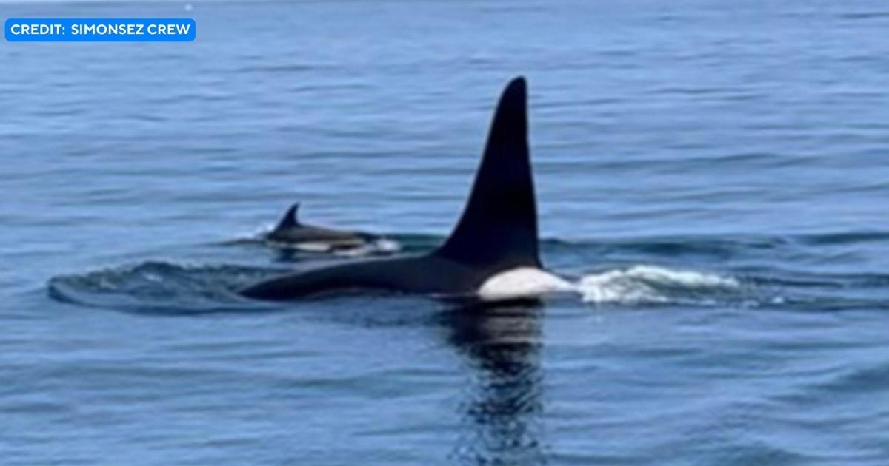

Orca spotted swimming with dolphins off Cape CodPROVINCETOWN - A Cape Cod fishing crew witnessed an awesome sight in the waters off Provincetown on Sunday: A killer whale swimming alongside dolphins. Christopher Simon says the crew of the Simonsez was fishing for tuna in the Stellwagen Bank when Captain Kevin Simon spotted a "large fin" among the pod of dolphins. "His team quickly realized what it was and moved in to get a closer look," Christopher Simon tells WBZ-TV. The crew shared photos and videos of the orca to Instagram. Orcas have made headlines recently for incidents of killer whales seemingly ambushing boats - but those occurrences have been far away, off the coasts of Spain and Portugal. A boat captain said "they knew exactly what they are doing." |
 |